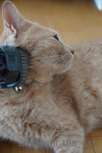
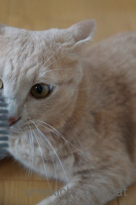

換毛期に備えよう！ [梅吉]
ブラシ嫌いならばと考えた。これはどうでしょうか・・・

梅吉さんは掃除機へっちゃらだもんね♪

ほらほら、いかがですか〜

あ、

ダメですか〜。一瞬気持ち良さそうな顔したじゃない。

じゃあ、頭の後ろの方はどうですか？ほら自分じゃできないところだし・・・

ああっ！

はい、わかりました、ごめんなさい
掃除機もお怒りを買いました。（吸引力は最弱です。）
でも掃除機好きなんですよ。走ってきてタックルしたりしますから。
毛を吸われるのが気に入らないという・・・・
知識はあっても良いかな、と買ってみました。
amazonでは売り切れていたのですが出版社のサイトにバックナンバーがあり
送料無料で送ってくれました。（回し者ではないですよ〜）

カフェオレ色の梅吉

梅吉 2023年8月10日 永眠


梅吉と出会った譲渡会

犬猫の理由なき殺処分ゼロ
妄想広告
UMEKICHI 光

爆発的に早い！
時々攻撃的！
Thanks to Mr.Boss365
爆発的に早い！
時々攻撃的！
Thanks to Mr.Boss365

ペットと暮らしていると病気、介護、別れは避けて通れませんね。
それだけに無事に一日が過ぎることがうれしいですし感謝ですね。
by yhiga-siura (2016-09-12 16:44)
片手に掃除機、もう片手にカメラって事ですか？
by アニ (2016-09-12 17:22)
梅吉さん 勇敢ですね エトは掃除機が怖いの カタッと触っただけで大慌てで逃げます 羨ましい光景です
by テオ (2016-09-12 17:24)
梅吉さん、掃除機を怖がらないんですね～、すごーい(ﾟдﾟ)！
ウチのにゃんズは全くダメですね・・・掃除機が近付いただけで猛ダッシュです(>_<)
by ひでぷに (2016-09-12 20:19)
フフ(^^)じょうずにお手々が使えていますね！
あれ？梅吉さん、おひげの色が色々ですか？？
白と黒と混ざって見えますが…光の加減かな？
by も〜 (2016-09-12 20:29)
梅吉さん、一瞬気持良さそうな表情なのにＮＧだったんですねぇ(^_^;)
うちもブラッシング苦手でしたが、根気強くやって（かみさんがｗ）最近は少しくらいなら我慢するようになりました(^^♪
あっ、圭太だけはかみさんの手ブラッシングですｗ
by ニッキー (2016-09-12 20:52)
yhiga-siuraさん＞ペットはよく寝て、よく食べて、元気に遊んで
元気にトイレに行ってもらえればそれでだけでうれしいですよね♪
本当にいつまでも元気でいてほしい・・・
アニさん＞そうです。片手カメラ。
腕力がついて片腕だけ内村選手みたいになるかも。笑。
テオさん＞梅吉は怖いものなし！
逆に怖がるものがほしいくらいです。脅しが効かない・・・・
ひでぷにさん＞うちで使っている掃除機が構造上可能なら乗るでしょう。
お掃除ロボット系ならもう絶対乗る！！
も〜さん＞よくお気づきに！根元だけが黒いヒゲ、
全体が白いヒゲ入り混じっております。
6ヶ月頃からなり始めて、わ〜〜〜、おっちゃんや〜〜と言われてました^ ^
ニッキーさん＞やっぱり根気よくですよね。
ブラシがメイン、掃除機はサブ扱いで。ワタクシも頑張ってみます。
手ブラッシングは、濡れ手で猫毛方式かなぁ。
by ちぃ (2016-09-13 12:59)